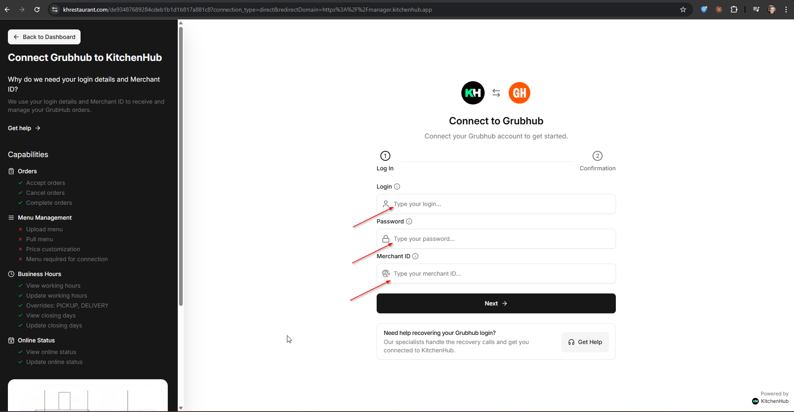
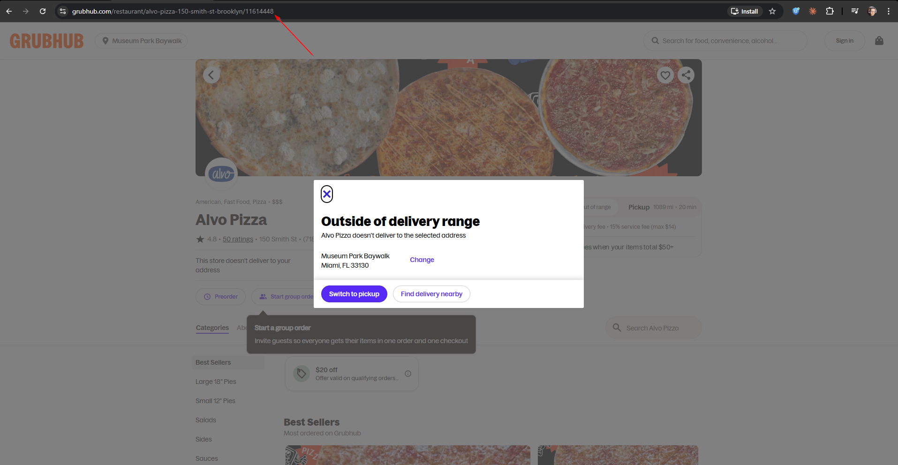
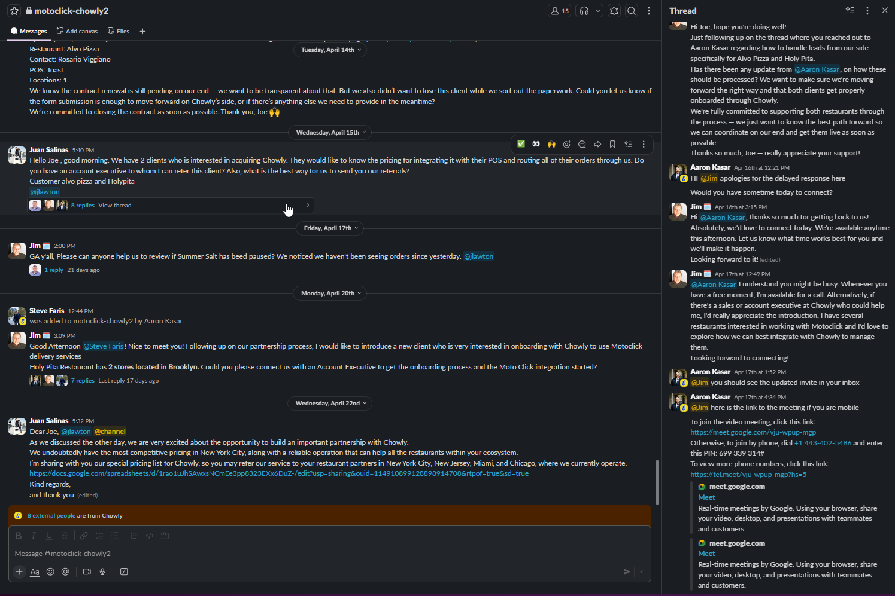
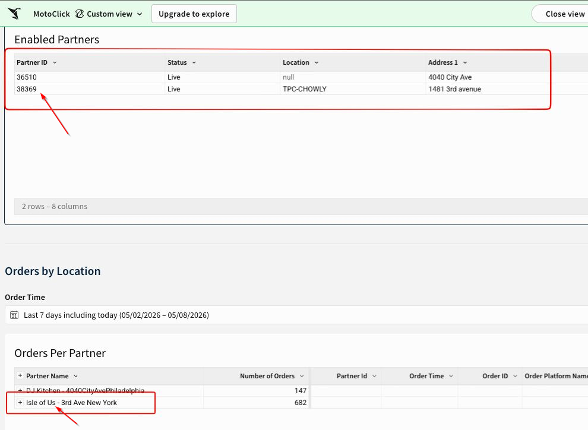
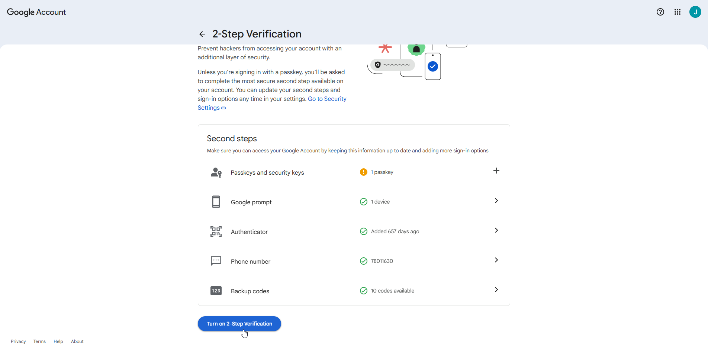
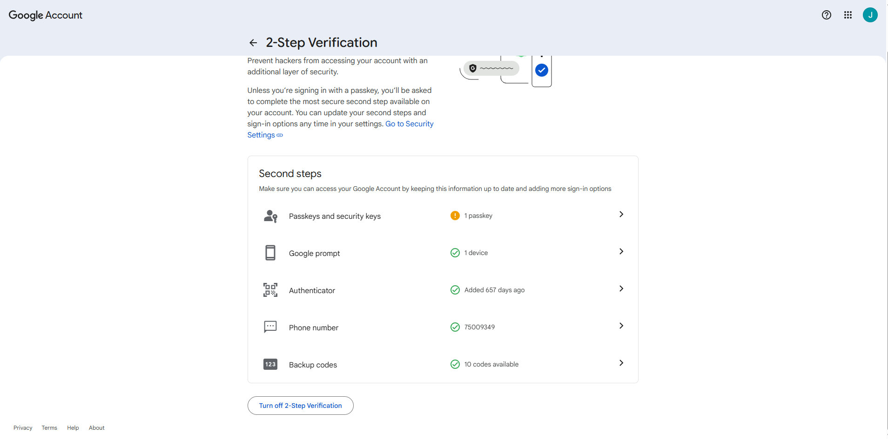
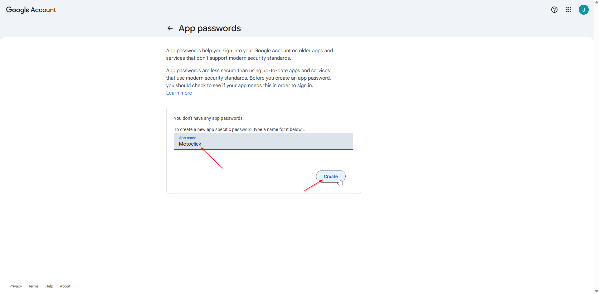
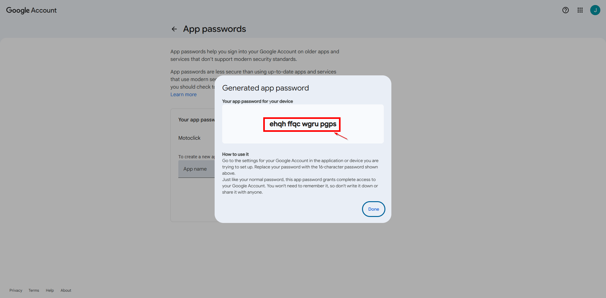
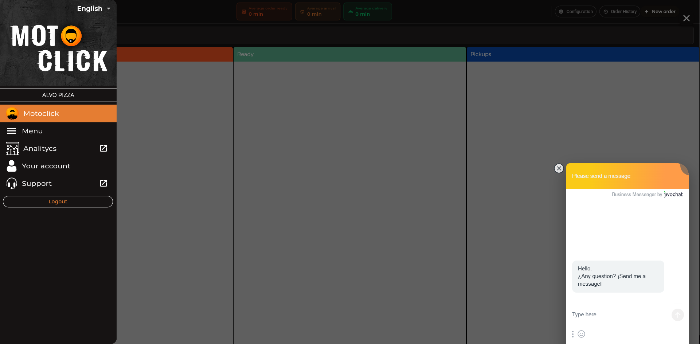

Motoclick Onboarding Guide
Operational process for onboarding a new merchant from sales agreement to go-live. Navigate the four main sections below or use the sidebar.
Middlewares
Kitchenhub · Chowly · Stream
POS Systems
Toast · Square · Clover · Aloha · Stream · Shift4
Web / Email
Third Party · Restaurant Web · Toast-Web
Motoclick
Central dispatch panel & merchant management
Operational Onboarding Process
From sales agreement to merchant go-live — Jordan (Onboarding Manager) is involved from the initial call onwards, coordinating with the Systems Department to ensure a seamless integration across all platforms and delivery services the merchant uses.
- Confirm delivery coverage (e.g. 2-mile radius), pricing: bike rate, catering/car rate, and special conditions.
- Confirm which delivery channels the client currently uses: Uber Eats, DoorDash, Grubhub, Website, etc.
- Confirm whether the client is currently using another logistics company for deliveries.
- Confirm the exact delivery channels the client will give to Motoclick.
- Define if the merchant uses a POS system: Toast, Square, Revel, or another.
- Confirm if the merchant uses middleware to centralize orders: Chowly, Stream, KitchenHub, or other.
- Identify the source of truth for orders: POS, middleware, delivery app dashboard, website, or email.
- Confirm if existing integrations could be affected by the Motoclick onboarding process.
- Available options: KitchenHub, Email Protocol, Stream, Chowly, Direct API, or POS integration.
- Select the option that allows Motoclick to receive orders without interrupting the merchant's current kitchen flow.
- Must include: client name, channels, POS, middleware, delivery radius, rates, and selected integration method.
- Include all credentials, access details, or contact points needed for implementation.
- Configure merchant account, delivery settings, and operational rules.
- Synchronize the Merchant Panel with the selected integration: Email Protocol, KitchenHub, Stream, Chowly, API, or POS.
- Verify orders flow correctly into Motoclick.
- Verify POS printing, auto-acceptance, order data, pickup time, customer address, and dispatch synchronization.
- Document issues and resolve them before handoff.
- Operations trains the client on how to use the Motoclick Merchant Panel.
- Explain the 'Order Ready' workflow and when orders are released to dispatch.
- Approve the merchant for go-live.
1.1 Kitchenhub Overview
Kitchenhub is a powerful middleware that centralizes your orders from multiple delivery platforms into a single dashboard.
Select one of the sub-steps in the sidebar for specific instructions.
1.1.1 How to Login
Access the admin panel using your merchant credentials.
Go to Dashboard1.1.2 How to create Location
Instructions for setting up physical or virtual locations.
Open Notion Guide1.1.3 How to create Store
Step-by-step guide to adding brands and stores.
Open Notion Guide1.1.4 How to Connect Providers
Link your UberEats, DoorDash, and other delivery partners.
Open Notion GuideIf you don't have the delivery provider credentials, you can send a unique link to the merchant so they can enter their own details. Once they complete the form, the provider is automatically integrated through Kitchenhub.
- In Kitchenhub, select the Provider you want to connect (e.g. Grubhub, UberEats, DoorDash).
- Kitchenhub will generate a unique connection URL. Copy it and send it to the restaurant owner.
Example: https://khrestaurant.com/de93487689284cdeb1b1d1b817a881c8 - The merchant opens the link and fills in the three required fields:
- Login — email or username for their provider account.
- Password — password for that account.
- Merchant ID — the restaurant's unique identifier on the provider.

- To find the Grubhub Merchant ID, look up the restaurant on grubhub.com and take the digits at the end of its page URL.
Example: grubhub.com/restaurant/alvo-pizza-.../11614448 → Merchant ID: 11614448
1.1.5 How to Setup Tablet
Configuration of the receiving tablet for order management.
Open Notion Guide1.2 Chowly Setup
Chowly integrates our delivery platforms directly with merchant.
Ensure you have reach an agreetment between AE (Account Executive) from Chowly to get starting the integration.

1.3 Stream Middleware
Manage multiple brands and orders through the Stream ecosystem.
1.3.1 Stream Help Center
Access official documentation, troubleshooting guides, and support for Stream.
Visit Help Center2.1 Kitchenhub POS
Setup instructions for the Kitchenhub Point of Sale system, including hardware and software configuration.
2.2 Chowly POS
Configuration steps to link existing POS with Chowly for automatic order injection.
To associate a restaurant with Motoclick's dispatch panel and start displaying their orders, you must obtain the Merchant ID from Sigma — Chowly's internal management platform. This ID is the unique identifier that links the merchant's delivery activity to our system.
- Log in to the Sigma platform using your Chowly admin credentials.
- Search for the restaurant by name or location.
- Open the merchant's profile and locate the Merchant ID field — this is the value you need.
- Copy the Merchant ID and enter it in Motoclick's panel to complete the association. Once linked, orders from this merchant will appear in the dispatch view.
The image below shows the Sigma platform. The Merchant ID is a required field — without it, Motoclick cannot route or display the merchant's delivery orders.

2.3 Stream POS
Setup and configuration guide for integrating Stream as a Point of Sale system.
2.4 Clover POS
Setup and configuration guide for integrating Clover as a Point of Sale system.
2.5 Square POS
Setup and configuration guide for integrating Square as a Point of Sale system.
2.6 Aloha POS
Setup and configuration guide for integrating Aloha as a Point of Sale system.
2.7 New Edge POS
Setup and configuration guide for integrating New Edge as a Point of Sale system.
2.8 Shift4 POS
Setup and configuration guide for integrating Shift4 as a Point of Sale system.
3.1 Third Party Integrations
Manage integrations with external web ordering services and email notification systems.
3.2 Restaurant's Web
Embed the Motoclick ordering widget directly into your restaurant's official website.
To enable email order scraping for the restaurant, we need to create a dedicated Google email account for them and enable Two-Factor Authentication (2FA). This is a required step before generating the App Password that Motoclick's Systems Department will use.
-
Create the email account and navigate to the Google Account security settings to enable Two-Factor Authentication. The screen below shows the 2FA setup page:

-
Once 2FA is enabled, your account security page will confirm it is active — as shown below:

-
With 2FA active, go to Google Account → Security → App Passwords to generate the app password that will be shared with Motoclick's Systems Department. The App Passwords section looks like this:

-
Google will generate a 16-character code (for example: ehqh ffqc wgru pgps). Copy this code and share it with Motoclick's Systems Department. This code allows Motoclick to scrape email orders from the restaurant's inbox on their behalf.

3.2.1 Toast-Web (toasttab)
Configuration guide for integrating the Toast web ordering experience via toasttab into your delivery workflow.
4.1 Motoclick Panel
The central command center for your delivery fleet and order tracking.
Access real-time data and manage your drivers through the Motoclick Panel.
